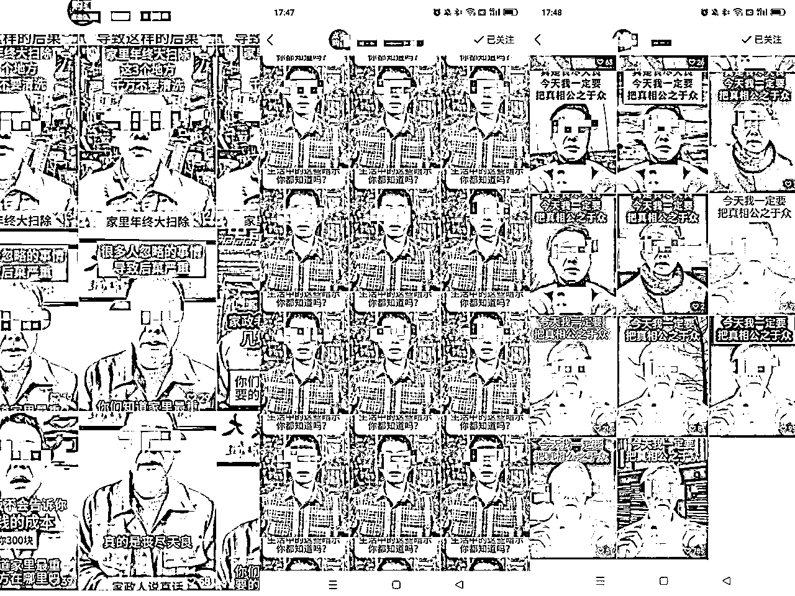

来源：https://ragovxb5pzg.feishu.cn/docx/MWiHdtAeKomlTgx0ljAc9YmKnUc
各位生财圈友好，我是 Jian贱贱 ，刚进生财一年，前两次大航海都草草收场。
没想到在第三次大航海期间，终于厚积薄发 成功爆单，5天内靠单个账号打出了30W的成交额，到手佣金17万（>60%高佣）
具体数据如下：
1月5日-1月10日里面，我总共发了接近60条带货视频
其中有7条破 10w 播放，分别为 13w 21w 17w 22w 42w 18w 16w
总共打出了29.1w成交额，到手佣金17w
很多圈友都在广场上刷到过我的账号，我也因此 “一夜成名” ，链接到了很多优秀的圈友。
我坚信 「越分享越幸运」，于是就将自己这次爆单的经过给大家毫无保留地分享出来。
可能大家会觉得我很有天赋，一个月不到，就赚到了别人一年的工资。但我内心里知道，自己只是个运气好的普通人，在多次失败后 终于品尝到了成功的滋味。
但我必须承认，自己之前的每一次失败，都意义非凡。
其实贱贱一直都是一个三分钟热度的人，比如之前考研考上了985的卷王专业，但因为不想每天封在校园里做核酸，最后就没有去。再比如之前在公司里刚熬过试用期，就开始天天摆烂，每天生不如死地上班。
去年过年期间，迷茫的我在翻阅数字游民 @范米索 的公众号时，了解到了生财有术，谁能想到这个小小的举动彻底改变了我的命运。
3天体验期里，我仿佛刘姥姥进了大观园，如饥似渴地翻阅着里面的精华文章。
于是去年的418日，我毫不犹豫地加入了 生财有术 ，当时的我信心满满，觉得自己一定能把副业给搞好。
每天上下班的地铁上，我就放下了短视频，转而去看 生财有术的帖子。
在那里，我看见了一个又一个普通人靠着互联网翻身，希望着自己也能在某一次航海里面，成功把副业给搞起来。
2023年最火的东西，必然是 ChatGPT。当初一腔热血的我，就一口咬定要深入 AI 时代。在看了一大堆「正确而无用」的东西以后，成为了全公司最懂 AI 的人。
老板需要一个懂 AI 的人，就让我每天坐他边上，琢磨如何靠 AI 为全公司降本增效。从某种角度来说，我是一个比较早期的 Prompt Engineer。
当时恰逢4月航海，我兴冲冲地报名了 AI 绘画航海，也花了好多钱付费学习 AI 相关的知识。
主业上，我一边琢磨怎么把 AI 绘画、GPT 融入公司原有的工作流，副业上，我一边研究如何靠 SD 画图，赚到一些闲钱。
理想很丰满，现实很骨感。我第一次航海期间，只赚到了200左右。同时，老板最终决定还是让我转岗去业务部门，暂时搁置 AI 降本增效的策略。
当时贱贱很受挫，不过好在自己在航海实操中 全面提升了自己的网感 ，跑通了流程。同时，贱贱也在每天与老板交流的过程中 收获了不少金玉良言。
9月份 “最好上手的项目” 公众号流量主 非常火爆。三分钟热度的我，就下定决心要好好参加9月的流量主航海。
然而这个项目早已经过了 仅凭 GPT 就能躺赚的阶段了。网感和写作水平均欠佳的我，直到航海结束时也只能勉强达到月入100的水平。
与此同时，看到 越来越多的人开始宣传 流量主，越来越多的人 入局这个 0门槛项目，而自己又写不出特别爆的文章，真是急死了。
每天上班累得要死，下班以后搞副业又毫无起色，恰好前女友9月又出国读研了，这让我的生活完全失去了多巴胺，宛如一潭死水。
约会、夜店、茶局、游戏，体验了几次也就腻了。我的生活里，除了阅读一些认知提升的文章，自我感动一下以外，真没啥有意思的事情了。
毕竟，自己每天浪费10-11小时在公司和地铁上，钱又赚不到多少，玩也玩不尽兴。当初信誓旦旦地发誓，要30岁就退休，用余生去好好体验世界的光怪陆离，但现在我却在干嘛？
如果不曾见过光明，我本可以忍受黑暗。
如今这个经济环境，估计未来也不会好了，要么躺平混吃等死一辈子，要么拼一波，好好赚一波钱，来换取之后选择的自由。
12月，在通关了第三次《法环》之后，贱贱痛定思痛，不能再这样混下去了。必须得找个风口上的项目，必须得找个靠谱的老师，必须得坚持至少做他个半年，必须得破釜沉舟地去干！
这一次，不再像当初刘姥姥进大观园，贱贱开始有目的性地 阅读生财上的文章，搜寻着自己的目标。
这里必须感谢 生财最懂新手的男人 @郭晓文，贱贱从他的文章中，意识到了自己之前犯的很多错误，并且从中吸取养分，调整好了自己的心态，也感谢其他一众视频号大佬分享的帖子，让贱贱坚信 视频号 大有可为。
最终，在贱贱筛选掉了一堆项目以后，命运的齿轮让我选中了@孟_MENG 孟总的团队。2023年12月18日，贱贱正式入局视频号口播带货。
能选到一个正确的团队，就已经成功40%了。
我师傅 孟总 当初是负债100w，绑着炸弹做 多多视频的。那我就模仿孟总和@木易 ，每天幻想着自己倒欠银行30w，必须得在半年以内赚出30w还清债务。
事实证明，“幻想欠债”，真能给自己打鸡血，虽然效果比不上“真实欠债”，但确实是有作用的。
我刚开始学的时候，和所有新手小白其实没啥区别，会犯一堆错误。截止1月5日我爆单前，总共也才赚了700元。
但其实无所谓，反正可以不停地厚着脸皮找家人开新号，我坚信自己总有一天能爆单的。
大家有没有在视频号上，看到过这种莫名其妙发了几个 看上去一样的短视频，然后点进去一看，是一个非常简陋，却刷刷出单的直播间吗？

这就是视频号的连怼瞬爆玩法。具体来说，其逻辑就是：
故事的一切都要从我师傅 孟总 的一个字开始。1月4日周四的晚上10点，孟总 在群里发了条视频。
这个”刘某某“看上去好像不太聪明，咋咋呼呼地反拿身份证 实名举报。
这是他的全部文案：
当时我刚刚拜访完一家亲戚（为了找亲戚帮忙注册账号），在坐地铁回家。本来还想在路上看一集狂飙的，但是看到孟总在群里发了一个“快”，立马就支楞了起来。
立刻在地铁上就开始构思文案，构思素材，在google里面搜索“家政图片”。虽然到家已经快12点了，但是我还睡个蛋啊！
我必须在早上6点前发视频，才能吃到清晨 老人们刚起床时的一大波流量！
当然，如果想做出爆款实拍，必须得“先抄再超”。必须得打磨文案、镜头表现力、洗衣机素材、BGM等等方面。
那天直到凌晨4点，我才把实拍视频给剪好。剪好视频的时候，我也不敢保证能爆，但我已经把细节做到最好了。
这里插一嘴：爆品的周期 要比 爆款视频的周期 要长久很多。洗衣机清洗剂 这款爆品，其实已经爆了有很久了，之前就有很多的爆款视频 珠玉在前。
比如12月底，就有一个 “德国30年老家政” 的文案非常火。
于是，我就提取了 “德国30年老家政文案” 里 那些唬人的字眼：“比马桶还脏，大肠杆菌，注水后霉菌，必须每3个月清洗”。
这段文案是转化的精髓，时至今日仍然屡试不爽。然而“刘某某”的文案里，这些内容不够突出。
咱们来对比一下”刘国根“视频的文案，和我的文案。
前三秒开幕雷击
我张浩然实名举报，有的人发视频说白醋加点洗衣粉洗洁精就能够清洗掉洗衣机里的脏东西，这个是假的，大家千万不要相信。
展示权威+“高学历回国做家政”的槽点
我是一名家政工作人员，曾经在德国一边留学一边兼职做家政清洁工。总共在德国也待了有5年了，今天我就跟你们好好分享一下德国的每一户人家洗衣机都是干干净净的原因。
激发需求
他们宁愿3个月不洗衣服，也不会超过3个月不清洗衣机。因为有相关数据表明，3个月不洗的洗衣机里面的细菌含量是马桶的 530 倍，而大肠杆菌的检出率也是99.3%。注水 20 分钟以后，霉菌高达每升5,466个。所以一定要每两到3个月就给洗衣机洗澡。
用合理的理由，引导用户做互动数据
今天我就把我在德国那边清洗洗衣机的方法免费分享给你们，防止大家看完视频之后忘记了。大家可以先点赞、收藏或者转发给你身边需要的朋友。
破除阻力，击破顾虑
其实清洗衣机不一定要花大价钱，请师傅把它拆开来清洗。你只需要找一种洗衣机专用的清洁剂就可以了，往洗衣机里面倒上一点，再倒点热水，盖上盖子，按启动键就可以开始了。洗衣机在清洗的过程中，就会把一些细菌、污渍全部都毫无保留地把它清洗出来。包括里面的一些死角，难以够到的夹角，里面的细菌和脏东西都会给它排出去。
帮人帮到底，送佛送到西
如果你不知道怎么挑好用的清洁剂的话，可以点开我的头像里面有一个橱窗，我已经帮你选好了。
首先，开头前3秒，既不能过于浮夸，又不能太平淡。还要配上激情的音乐。
其次，整个视频里面，细分开来总共可以添加6段洗衣机素材，其中每一段素材都能提高最终的转化。
这些素材当然都是从抖音上下载的，不得不说，抖音上的带货视频是真卷啊。他们全方位地拍摄了洗衣机从脏到干净的全过程，咱们直接搬下来，放到视频里面就行。
刚开始的时候，我就直接找最热门的那几条洗衣机素材，丢进视频里面就行。但是过了几天，群里不断有人说自己明明已经认真去重过的视频，却被系统判定是抄袭。
而原因，就是因为相同的抖音爆款洗衣机素材，被太多人给搬运了。
这代表，之后发的视频，必须更加认真地进行去重。于是我就找了一堆抖音上的洗衣机素材，有的是热门素材，有的是冷门素材。然后把这些素材，通通根据职能划分，然后重新拼装，放进每一条视频里面。
那天我拍好视频以后，定了一个6点的闹钟，准备到时候起来看一眼视频有没有爆。。。然而6点睡昏过去了，没醒。
醒来已经8点了，看了眼点赞数，几千条。再看一眼播放量，跑到了6W。我砰的一下就从床上跳起来了。
还好离我爸不远，赶紧找他过一个开播前的 实名人扫脸验证（这个号是我爸的），然后立刻开播承接流量。幸好我开播不算太晚，吃到了最开始的5万 GMV。
然后我就是边混剪，一边补视频，不断拉直播时长。期间孟总一直在指导我逼单话术，指导我处理违规情况。我饭都顾不上吃，就一直坐在电脑前奋战。
毕竟当时我是单兵作战，没有自己的小团队。所以这么大的流量，自己一个人完全吃不掉。
于是我就毫不犹豫地将自己的素材分享给了群里的每一位小伙伴，让他们把原视频去重之后发到自己账号上，出单以后再分我一定比例的佣金。
靠着这个爆款视频，我也帮助到了很多大神赚到了钱。其实有时候帮别人赚钱，要比自己赚钱更爽。
时间过得飞快，没多久我就靠着红牛+润喉糖，顶到了第二天的8点，满24小时自动下播了。
于是我美美地拍了个照，发了个朋友圈装逼，自说自话地去睡觉了。
然而，要是能穿越时空，我会回到当初给自己一巴掌清醒清醒。
睡了4个小时，醒来以后才发现，自己又犯傻逼了。
自己还是经验不足，因为看到孟总睡觉了没回我，就匆忙跑回去睡觉了。其实自己完全可以找个代播，重新开播，从而把这波流量全吃光。
于是，1月6日晚上20:00，时隔12个小时，我开启了第二场直播。（中间这12个小时没开播，估计得亏个2-3w）
第二场直播就很得心应手了，开开心心地吃到了6点开始，老人早起的一波流量。
一直播到了早上10点，当时我状态很差很差，已经神志不清开始说胡话了，想让孟总帮忙找个代播，结果。。。。
因为我在上海，而代播在广东，微信就触发了异地登陆风控。任何一台手机都无法登陆微信了。
艹！我立刻清醒地不能再清醒了，疯狂地跑出门，去找微信实名人：我爸 ，让他扫脸解除风控。
还好比较近，我骑车一会儿就能找到我爸。其实这3天里，我一共只睡了8个小时，我一边骑车一边低声呼唤
“别死，别死，集中精力集中精力集中精力，别TM在马路上被撞死，注意车注意车注意车”
终于在菜场里找到了我爸。
1小时以后，解除风控，我可以登陆微信，可以开播了。专业代播@百钞 夫妇 ，闪亮登场！！！
果然牛逼，在24小时时间里，他们咔咔干了6.8w的GMV。当时的我，看到他们直播都惊呆了，让我见识到了世界的“凶恶”。如同饿狼盯上了绵羊一样，他们死死盯上了老大爷老阿姨们的钱包。
我直播的时候，会让哥哥姐姐们每3个月用半罐。理性消费，不要一下子拍8罐12罐，否则用不光。
他们直播的时候，会让哥哥姐姐们每1个月用一罐，趁现在便宜，拍个8罐12罐，多囤点，用不光还可以送给亲戚朋友们。
”太可耻了！” 我心里嘀咕着，然后悄悄用笔记本记录下了他们的话术，准备直播以后也这么逼单。
你以为故事就这样结束了？当然没那么简单！
两位直播战神 在满24小时下播以后，一句话点醒了我：我应该赶紧继续实拍，继续搞新号，然后请一堆代播，来放大矩阵。我顿时领悟，于是才刚播了1小时就匆忙下播。
专业的事让专业的人来干！我这张脸，我这件衣服，就TM应该拿来实拍，而不是拿来直播！！
当时，我没有急着去搞新号，我先是搞了3条全新的实拍，作为老号的存货视频，提供给战神夫妇。没想到，里面的第3条居然又爆了。
这条能爆，运气成分非常大。因为当时我的这个号已经被很多同行看到了，基本上每一条视频都遭到了多次举报。
这导致，我很多的视频 因为一些特别扯淡的理由而被限流。就在这种情况下，居然都能跑出一条新素材，让我这个老号迎来了第二春，实在是神奇。
然后我也开了几个小号，视频都是跑到6k播放量就跑不动了。那时候的我还特别挑剔，觉得6k的播放不值得自己开播，属实是飘了。
最终，又经过了一个24小时，这几天里，大号总共被限流了22条视频，我们完全榨干了流量，爆单迎来了尾声。
目前视频号的红利真的非常大，玩法也很多样，新手进来总是能赚到钱的，无非是多和少的区别。
比如我上周带了一个大一学弟来搞视频号，没想到他执行力非常强，一周里就跑通了全流程，总共播了两场，赚到了1500左右的佣金。他可比我刚入局视频号的时候猛多了。
我直至现在，仍然不觉得自己有什么特别出众的地方。自己只是一个执行力强的菜鸡，靠着运气好 碰上了一个给力的团队，一个向上的氛围，一个天选神号，和一个爆款素材。
风口上的短期项目就是这样，拼的就是执行力。只要坚持 快速跟素材、坚持研究实拍、不断开播、不断实战，总能迎来属于自己的大爆单。
「你走过的每一步都算数」
虽然标题上写，贱贱入局视频号带货才25天，但这背后都离不开我前面几次航海里积攒下来的经验。
AI 绘画航海 教会了我如何顺应并且利用平台规则；公众号航海 教会了我如何 “开幕雷击” “哗众取宠”；剪辑航海 教会了我如何使用剪映并提升剪辑效率；时间管理航海 教会了我要 结果导向 而非 任务导向。
失败很正常，但是把之前失败的经验累积到下一次，成功就会越来越近。
「选对圈子，找对人」
人都是有弱点的，比如三分钟热度，比如畏惧困难爱拖延等等。靠意志力去违反人性，是无法长久的。倒不如主动去靠近能量高的人，让环境去改变自己。
生财就是一个高能量的大环境，一个新人可以飞速成长的环境。每一次大航海，都是高能量的小环境，有着身经百战、成果颇丰的教练和志愿者来提供信心和帮助，一起冲就完事了！
「抬头看天，低头赶路」
如果此刻正在阅读文章的你，还在感到迷茫困顿焦虑，那请允许我引用一下郭晓文老师去年4月给新人写的一篇文章作为结尾：
把时间线往回拉一年，我也不过是个在风口项目上苦熬三个月，都拿不到结果的纯纯的搞钱白痴。
今天这篇帖子，是我对自己和生财有术这一年来缘分的阶段性总结。
我也希望，能借这个帖子，缓解一下大家刚进来，因眼花缭乱而焦虑的心:
抬头看天，低头赶路，美好的未来，就会飞奔而来。
前提是，你得有耐心，不抱怨，不放弃，日拱一卒。
如果你可以耐着性子看到这里，真是万分感谢！我是 Jian贱贱，一个不甘平庸的00后，希望你与我一起 “短期项目长期做”